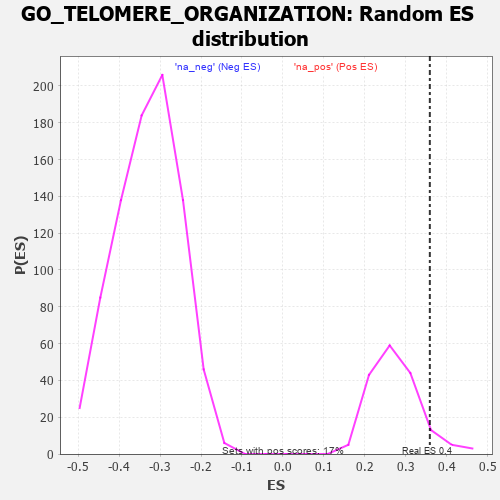

| | | Dataset | 7d |
| Phenotype | NoPhenotypeAvailable |
| Upregulated in class | na_pos |
| GeneSet | GO_TELOMERE_ORGANIZATION |
| Enrichment Score (ES) | 0.3589626 |
| Normalized Enrichment Score (NES) | 1.3181906 |
| Nominal p-value | 0.075581394 |
| FDR q-value | 0.39567626 |
| FWER p-Value | 1.0 |
Table: GSEA Results Summary
 Fig 1: Enrichment plot: GO_TELOMERE_ORGANIZATION
Fig 1: Enrichment plot: GO_TELOMERE_ORGANIZATION
Profile of the Running ES Score & Positions of GeneSet Members on the Rank Ordered List
| PROBE | GENE SYMBOL | GENE_TITLE | RANK IN GENE LIST | RANK METRIC SCORE | RUNNING ES | CORE ENRICHMENT | | 1 | HUS1 | | | 362 | 0.735 | -0.0149 | Yes |
| 2 | NBN | | | 405 | 0.696 | 0.0089 | Yes |
| 3 | ERCC1 | | | 453 | 0.660 | 0.0306 | Yes |
| 4 | WRN | | | 469 | 0.649 | 0.0560 | Yes |
| 5 | RFC2 | | | 488 | 0.635 | 0.0803 | Yes |
| 6 | YLPM1 | | | 556 | 0.611 | 0.0974 | Yes |
| 7 | APEX1 | | | 577 | 0.604 | 0.1202 | Yes |
| 8 | PARN | | | 660 | 0.572 | 0.1338 | Yes |
| 9 | RFC3 | | | 663 | 0.571 | 0.1574 | Yes |
| 10 | MRE11 | | | 693 | 0.560 | 0.1772 | Yes |
| 11 | XRCC6 | | | 694 | 0.560 | 0.2007 | Yes |
| 12 | BLM | | | 804 | 0.531 | 0.2092 | Yes |
| 13 | GAR1 | | | 806 | 0.530 | 0.2313 | Yes |
| 14 | RFC4 | | | 815 | 0.528 | 0.2524 | Yes |
| 15 | RPA1 | | | 817 | 0.527 | 0.2743 | Yes |
| 16 | RPA2 | | | 851 | 0.519 | 0.2919 | Yes |
| 17 | HDAC8 | | | 881 | 0.510 | 0.3096 | Yes |
| 18 | NHP2 | | | 906 | 0.505 | 0.3277 | Yes |
| 19 | TELO2 | | | 1006 | 0.482 | 0.3354 | Yes |
| 20 | RAD51 | | | 1090 | 0.466 | 0.3444 | Yes |
| 21 | SRC | | | 1128 | 0.459 | 0.3590 | Yes |
| 22 | DKC1 | | | 1292 | 0.431 | 0.3564 | No |
| 23 | EXO1 | | | 2002 | 0.304 | 0.2796 | No |
| 24 | XRCC1 | | | 2287 | 0.262 | 0.2548 | No |
| 25 | FEN1 | | | 2446 | 0.237 | 0.2447 | No |
| 26 | XRN1 | | | 2786 | 0.185 | 0.2097 | No |
| 27 | ATR | | | 2800 | 0.183 | 0.2157 | No |
| 28 | RTEL1 | | | 3010 | 0.148 | 0.1955 | No |
| 29 | BRCA2 | | | 3024 | 0.146 | 0.2000 | No |
| 30 | SMG5 | | | 3285 | 0.108 | 0.1716 | No |
| 31 | RFC5 | | | 3389 | 0.091 | 0.1624 | No |
| 32 | RFC1 | | | 3437 | 0.085 | 0.1601 | No |
| 33 | NOP10 | | | 3573 | 0.064 | 0.1457 | No |
| 34 | MAPK3 | | | 3589 | 0.062 | 0.1464 | No |
| 35 | SMG1 | | | 3843 | 0.021 | 0.1154 | No |
| 36 | NEK2 | | | 3871 | 0.016 | 0.1126 | No |
| 37 | PARP1 | | | 4014 | -0.010 | 0.0951 | No |
| 38 | PINX1 | | | 4515 | -0.097 | 0.0360 | No |
| 39 | PNKP | | | 4572 | -0.111 | 0.0336 | No |
| 40 | TERT | | | 4801 | -0.157 | 0.0113 | No |
| 41 | ATRX | | | 4929 | -0.184 | 0.0030 | No |
| 42 | XRCC5 | | | 4946 | -0.187 | 0.0088 | No |
| 43 | PRKDC | | | 4955 | -0.189 | 0.0157 | No |
| 44 | ATM | | | 5210 | -0.249 | -0.0059 | No |
| 45 | TNKS2 | | | 5239 | -0.254 | 0.0012 | No |
| 46 | RAD50 | | | 5314 | -0.276 | 0.0034 | No |
| 47 | GNL3 | | | 5614 | -0.349 | -0.0197 | No |
| 48 | TNKS | | | 6138 | -0.516 | -0.0642 | No |
| 49 | PIF1 | | | 6604 | -0.713 | -0.0930 | No |
| 50 | DOT1L | | | 6939 | -0.897 | -0.0977 | No |
| 51 | TEP1 | | | 7284 | -1.155 | -0.0927 | No |
| 52 | PARP3 | | | 7289 | -1.158 | -0.0447 | No |
| 53 | NEK7 | | | 7415 | -1.285 | -0.0067 | No |
| 54 | DCP2 | | | 7724 | -1.833 | 0.0312 | No |
Table: GSEA details [plain text format]

Fig 2: GO_TELOMERE_ORGANIZATION: Random ES distribution
Gene set null distribution of ES for GO_TELOMERE_ORGANIZATION